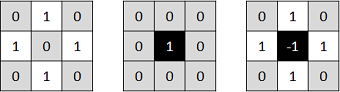

Hit-or-Miss
Goal
In this tutorial you will learn how to find a given configuration or pattern in a binary image by using the Hit-or-Miss transform (also known as Hit-and-Miss transform). This transform is also the basis of more advanced morphological operations such as thinning or pruning.
We will use the OpenCV function cv::morphologyEx.
Hit-or-Miss theory
Morphological operators process images based on their shape. These operators apply one or more structuring elements to an input image to obtain the output image. The two basic morphological operations are the erosion and the dilation. The combination of these two operations generate advanced morphological transformations such as opening, closing, or top-hat transform. To know more about these and other basic morphological operations refer to previous tutorials here and here.
The Hit-or-Miss transformation is useful to find patterns in binary images. In particular, it finds those pixels whose neighbourhood matches the shape of a first structuring element \(B_1\) while not matching the shape of a second structuring element \(B_2\) at the same time. Mathematically, the operation applied to an image \(A\) can be expressed as follows:
Therefore, the hit-or-miss operation comprises three steps:
- Erode image \(A\) with structuring element \(B_1\).
- Erode the complement of image \(A\) (\(A^c\)) with structuring element \(B_2\).
- AND results from step 1 and step 2.
The structuring elements \(B_1\) and \(B_2\) can be combined into a single element \(B\). Let’s see an example:
In this case, we are looking for a pattern in which the central pixel belongs to the background while the north, south, east, and west pixels belong to the foreground. The rest of pixels in the neighbourhood can be of any kind, we don’t care about them. Now, let’s apply this kernel to an input image:


You can see that the pattern is found in just one location within the image.
Code
The code corresponding to the previous example is shown below. You can also download it from here
#include <opencv2/core.hpp> #include <opencv2/imgproc.hpp> #include <opencv2/highgui.hpp> using namespace cv; int main(){ Mat input_image = (Mat_<uchar>(8, 8) << 0, 0, 0, 0, 0, 0, 0, 0, 0, 255, 255, 255, 0, 0, 0, 255, 0, 255, 255, 255, 0, 0, 0, 0, 0, 255, 255, 255, 0, 255, 0, 0, 0, 0, 255, 0, 0, 0, 0, 0, 0, 0, 255, 0, 0, 255, 255, 0, 0, 255, 0, 255, 0, 0, 255, 0, 0, 255, 255, 255, 0, 0, 0, 0); Mat kernel = (Mat_<int>(3, 3) << 0, 1, 0, 1, -1, 1, 0, 1, 0); Mat output_image; morphologyEx(input_image, output_image, MORPH_HITMISS, kernel); const int rate = 10; kernel = (kernel + 1) * 127; kernel.convertTo(kernel, CV_8U); resize(kernel, kernel, Size(), rate, rate, INTER_NEAREST); imshow("kernel", kernel); resize(input_image, input_image, Size(), rate, rate, INTER_NEAREST); imshow("Original", input_image); resize(output_image, output_image, Size(), rate, rate, INTER_NEAREST); imshow("Hit or Miss", output_image); waitKey(0); return 0; }
As you can see, it is as simple as using the function cv::morphologyEx with the operation type cv::MORPH_HITMISS and the chosen kernel.
Other examples
Here you can find the output results of applying different kernels to the same input image used before:


Now try your own patterns!